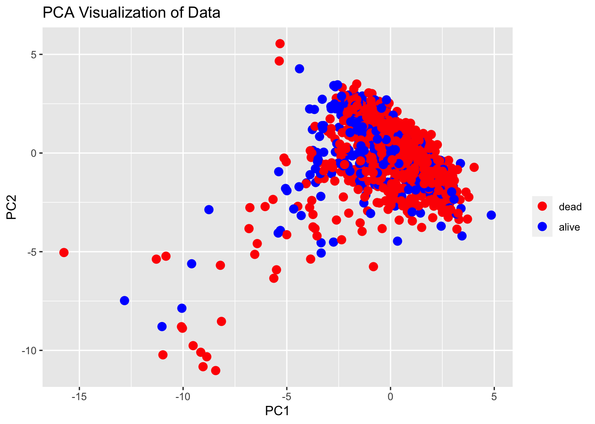
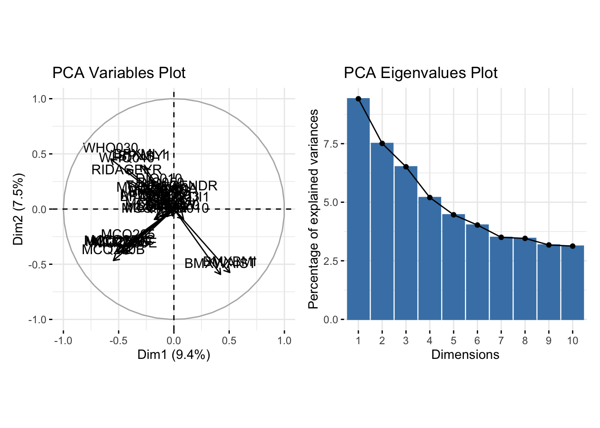
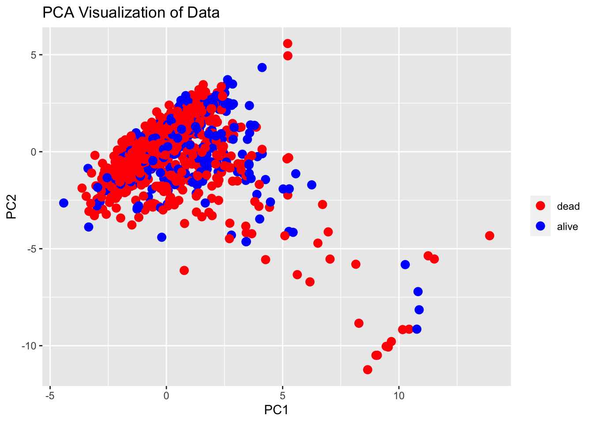
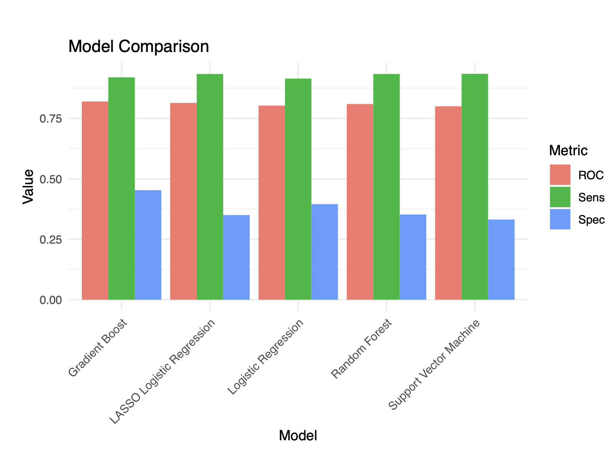

library(dplyr)
library(ggplot2)
library(factoextra)
library(FactoMineR)
library(table1)
library(gplots)
library(caret)
library(RANN)
library(patchwork)Example Data Analysis
Research Question
This study aims to analyse NHANES 2003-2004 data to predict the mortality status (binary outcome) for participants 50 years and older.
Intended Audience
The intended audience for this study encompasses epidemiologists, public health researchers, geriatric healthcare providers, and health policy makers. Epidemiologists and public health researchers may find the analysis particularly useful for identifying risk factors associated with mortality in older populations, which could inform targeted interventions. Healthcare providers working with older adults can use the findings to refine clinical screening processes and prioritize preventive measures. Lastly, health policy makers can leverage the insights gained to support evidence-based decisions regarding resource allocation for aging populations and to develop policies that address the key determinants of mortality identified in the study.
Data Source
The dataset used in this analysis can be found at NHANES 2003-2004 (“NHANES 2003-2004 Data” 2004). The National Health and Nutrition Examination Survey (NHANES) is a cross-sectional, nationally representative survey that assesses demographic, dietary and health-related questions and can be used to better understand differences in health and nutrition across the life-span. Almost all survey data are made publically available by the National Center for Health Statistics (NCHS).
Data Dictionary
The dataset includes the following domains:
| Variable | Explanation |
|---|---|
| DEMO | Demographic Variables & Sample Weights |
| DR1TOT | Dietary Interview - Total Nutrient Intakes, First Day |
| DR2TOT | Dietary Interview - Total Nutrient Intakes, Second Day |
| BAX | Balance |
| BPX | Blood Pressure |
| BMX | Body Measures |
| CVX | Cardiovascular Fitness |
| VIX | Vision |
| L13AM | Cholesterol - LDL & Triglycerides |
| L13 | Cholesterol - Total & HDL |
| L25 | Complete Blood Count with 5-part Differential - Whole Blood |
| L11PSA | Prostate Specific Antigen (PSA) |
| ALQ | Alcohol Use |
| BPQ | Blood Pressure & Cholesterol |
| DIQ | Diabetes |
| HSQ | Current Health Status |
| MCQ | Medical Conditions |
| SSQ | Social Support |
| WHQ | Weight History |
The full description of the variables is available at NHANES 2003-2004. For example, DEMO and MCQ components are described at DEMO and MCQ, respectively.
Data Wrangling with dplyr and plotting using geom_*() functions from ggplot2
Data preprocessing
load("/Users/yuangao/Desktop/class/stats quarto/my web/data/nhanes2003-2004.Rda")
predictors_target <- c('RIDAGEYR', 'RIAGENDR', 'BPQ010', 'BPQ060', 'SMQ040', 'DIQ010', 'DIQ050', 'DIQ090', 'MCQ010', 'MCQ053', 'MCQ160A', 'MCQ160B', 'MCQ160K', 'MCQ160L', 'BMXWAIST', 'MCQ160M', 'MCQ220', 'MCQ245A', 'MCQ250A', 'MCQ250B', 'MCQ250C', 'MCQ250E', 'MCQ250F', 'MCQ250G', 'MCQ265', 'SSQ011', 'SSQ051', 'WHQ030', 'WHQ040', 'LBXRDW', 'HSD010', 'BPXPULS', 'BPXML1', 'VIQ200', 'BMXBMI', 'BPXSY1', 'BPXDI1','mortstat')
print(paste(predictors_target[!predictors_target %in% colnames(nhanes2003_2004)],"column not in the datset"))
nhanes <- nhanes2003_2004[,which(colnames(nhanes2003_2004)%in%predictors_target)]
na_target <- nhanes %>% filter(is.na(mortstat))
print(paste("NA in mortstat",nrow(na_target)))
nhanes <- nhanes %>% filter(!is.na(mortstat))
nhanes$RIDAGEYR <- as.numeric(nhanes$RIDAGEYR)
nhanes <- nhanes %>% dplyr::filter(RIDAGEYR>50)
nhanes$mortstat <- as.factor(nhanes$mortstat)
print(paste("after filter for individuals with age >= 50",nrow(nhanes),"left"))
# What I found if we exclude all the rows with NAs, there will less training variable left and causing a imbalanced dataset. I will just remove BPXSY1,RIDAGEEX and BPXDI1 to keep the power of the model
# Here I imputed the numeric predictors and center
dummy_vars <- sapply(nhanes, function(x) length(unique(x)) <= 10)
nhanes[, !dummy_vars] <- apply(nhanes[, !dummy_vars], 2, as.numeric)
imputation_method <- "knnImpute"
preProcess_missing_data <- preProcess(nhanes, method = imputation_method)
nhanes_imputed <- predict(preProcess_missing_data,newdata = nhanes)
# Here I will drop the column VIQ 200 because it causes most NAs.
nhanes_imputed <- nhanes_imputed %>% dplyr::select(-VIQ200)
na_counts <- colSums(is.na(nhanes_imputed))
# Print the number of NAs for each column
print(na_counts)
# Now drop other rows that contains NAs.
nhanes_imputed <- nhanes_imputed %>% na.omit()
print(paste(nrow(nhanes_imputed),"cases left")) # "1854 cases left"Exploratory Data Analysis
In the exploratory data analysis, I used PCA to find PC1 and PC2 loadings for the variables and conducted feature selections to remove the predictors with low PC loading values in PC1 and PC2.
What is PCA?
Principal Component Analysis (PCA) is a statistical procedure that utilizes an orthogonal transformation to convert a set of observations of possibly correlated variables into a set of values of linearly uncorrelated variables called principal components (Maćkiewicz 1993). This is done in such a way that the first principal component has the largest possible variance (that is, accounts for as much of the variability in the data as possible), and each succeeding component, in turn, has the highest variance possible under the constraint that it is orthogonal to the preceding components. The resulting vectors are an uncorrelated orthogonal basis set. PCA is sensitive to the relative scaling of the original variables. For more advanced data analysis methods, see (Alpaydin 2020).
# Visualize data in the PCA dimension
nhanes_imputed <- as.data.frame(apply(nhanes_imputed, 2, as.numeric))
features <- nhanes_imputed %>% dplyr::select(-c("mortstat"))
pca_results <- prcomp(features,center = TRUE, scale. = TRUE)
pca_df <- data.frame(pca_results$x[, c(1, 2)]) %>%
rename(x = PC1, y = PC2) %>%
bind_cols(labels = nhanes_imputed$mortstat)ggplot(pca_df, aes(x, y, color = as.factor(labels))) +
geom_point(size = 3) +
scale_color_manual(values = c("red", "blue"), labels = c("dead", "alive"), name = "") +
labs(
title = "PCA Visualization of Data",
x = "PC1",
y = "PC2"
)
From the plot, we can see the first two dimension of PCA could slightly classfity the mortality of two groups
Feature Selection based on PCA
pca_var_plot <- fviz_pca_var(pca_results) + ggtitle("PCA Variables Plot")
pca_eig_plot <- fviz_eig(pca_results) + ggtitle("PCA Eigenvalues Plot")
# Combine the plots
combined_plot <- pca_var_plot + pca_eig_plot
# Plot them side by side
combined_plot
# Find the variable with high loading scores for the first two PCs
high_loading_vars_PC1 <- names(which(abs(pca_results$rotation[, 1]) >= 0.1))
high_loading_vars_PC2 <- names(which(abs(pca_results$rotation[, 2]) >= 0.1))
selected_features <- union(high_loading_vars_PC1,high_loading_vars_PC2)
nhanes_feature_select <- nhanes_imputed %>% dplyr::select(selected_features,mortstat)
features <- nhanes_feature_select %>% dplyr::select(-c("mortstat"))
pca_results <- prcomp(features,center = TRUE, scale. = TRUE)
pca_df <- data.frame(pca_results$x[, c(1, 2)]) %>%
rename(x = PC1, y = PC2) %>%
bind_cols(labels = nhanes_imputed$mortstat)
Caution
From the plot, there is no obvious improvement in distinguishing between the two groups using PCA. This may suggest that the data does not have a linear structure that PCA can exploit, or that other methods or parameters should be explored for better group separation.
ggplot(pca_df, aes(x, y, color = as.factor(labels)))+
geom_point(size = 3) +
scale_color_manual(values = c("red", "blue"), labels = c("dead","alive"), name = "") +
labs(
title = "PCA Visualization of Data",
x = "PC1",
y = "PC2"
)
###Model Selection:
Try logistic regression, support vector machine, random forest and gradient boost using grid search 5-fold cross validation to fine tune and select the best model, report accuracy, sensitivity, specificity and plot bar plot for each algorithm’s best hyper parameters
set.seed(2023)
library(caret)
library(e1071)
library(randomForest)
library(xgboost)
library(gbm)
# nhanes_feature_select <- nhanes_imputed %>% dplyr::select(selected_features,mortstat)
features <- nhanes_feature_select %>% select(-mortstat)
labels <- as.factor(nhanes_feature_select$mortstat)
levels(labels) <- make.names(levels(labels))
labels <- relevel(labels, ref = "X1")
# create a train control cv object.
control <- trainControl(method = "cv",
number = 5, # here I use 5-fold cross-validation
classProbs = TRUE,
summaryFunction = twoClassSummary,
savePredictions = "all")
# CV for logistic regression
logistic_regression <- train(x = features,
y = factor(labels),
method = "glm",
trControl = control,
metric = "ROC")
# grid CV for penalty regression
penalty_grid <- expand.grid(
alpha = 0:1,
lambda = seq(0.0001, 1, length = 100)
)
logistic_regression_penalty <- train(x = features,
y = factor(labels),
method = "glmnet",
trControl = control,
tuneGrid = penalty_grid,
metric = c("ROC"))
# grid CV for random forest
rf_grid <- expand.grid(mtry = c(5: length(features)))
rf_model <- train(x = features,
y = factor(labels),
method = "rf",
trControl = control,
tuneGrid = rf_grid,
metric = "ROC")
# grid CV for svm model
svm_grid <- expand.grid(C = c(0.1, 1,5,10),
sigma = c(0.01,0.05, 0.1, 1))
svm_model <- train(x = features,
y = factor(labels),
tuneGrid = svm_grid,
method = "svmRadial",
verbose = FALSE,
trControl = control,
preProcess = c("center", "scale"),
metric = "ROC")
# grid CV for boosting model: gbm
gbm_grid <- expand.grid(interaction.depth = c(1, 3, 5),
n.trees = c(50, 100, 150),
shrinkage = c(0.01, 0.1, 0.5),
n.minobsinnode = c(5, 10, 20))
gbm_model <- train(x = features,
y = factor(labels),
trControl = control,
tuneGrid = gbm_grid,
method = "gbm",
verbose = FALSE,
metric = "ROC")
best_lr <- logistic_regression$results %>% dplyr::select(ROC,Sens,Spec)
best_penalty_lr <- logistic_regression_penalty$results[rownames(logistic_regression_penalty$bestTune),] %>% dplyr::select(ROC,Sens,Spec)
best_rf <- rf_model$results[rownames(rf_model$bestTune),]%>% dplyr::select(ROC,Sens,Spec)
best_svm <- svm_model$results[rownames(svm_model$bestTune),]%>% dplyr::select(ROC,Sens,Spec)
best_gbm <- gbm_model$result[rownames(gbm_model$bestTune),]%>% dplyr::select(ROC,Sens,Spec)
best_lr$Model <- "Logistic Regression"
best_penalty_lr$Model <- "Penalty Logistic Regression"
best_rf$Model <- "Random Forest"
best_svm$Model <- "Support Vector Machine"
best_gbm$Model <- "Gradient Boost"
models_result <- rbind(best_lr,best_penalty_lr,best_rf,best_svm,best_gbm)
performance_long <- models_result %>%
tidyr::pivot_longer(cols = -Model,
names_to = "Metric",
values_to = "Value")
ggplot(performance_long,aes(x = Metric,y = Value, fill = Model)) +
geom_bar(stat = "identity",position = "dodge", width = 0.9) +
geom_text(aes(label = round(Value, 2)), position = position_dodge(width = 0.9), vjust = -0.5)
models_resultresults
models result plotting (as an image saved locally):

| ROC | Sens | Spec | Model |
|---|---|---|---|
| 0.7710657 | 0.3795556 | 0.9033834 | Logistic Regression |
| 0.7750547 | 0.3753939 | 0.9203685 | Penalty Logistic Regression |
| 0.7658329 | 0.3998384 | 0.9029984 | Random Forest |
| 0.7639381 | 0.1945859 | 0.9446820 | Support Vector Machine |
| 0.7927226 | 0.3534949 | 0.9469150 | Gradient Boost |
Sensitivity (True Positive Rate): \(\text{Sensitivity} = \frac{\text{True Positives}}{\text{True Positives} + \text{False Negatives}}\)
Specificity (True Negative Rate): \(\text{Specificity} = \frac{\text{True Negatives}}{\text{True Negatives} + \text{False Positives}}\)
Discussion
Based on the performance plot, the model shows a ROC around 0.75-0.8, sensitivity around 0.4, and specificity around 0.90-0.93. All of the models with the best parameters in the grid search CV have high specificity but low sensitivity. Sensitivity measures the proportion of correctly predicted death cases out of all the cases that were actually dead, while specificity measures the proportion of correctly predicted non-death cases out of all the cases that were actually non-death.
This is because the imbalanced nature of the dataset. In our training dataset, only 498 patients are positive cases (dead), while the remaining 1356 cases are negative cases (not dead). This dataset imbalance caused the classifier to learn patterns in the majority class and predict the majority class often, leading to high specificity and low sensitivity
The imbalance of the dataset is likely the reason explain the imbalance in the sensitivity and specificity of the model, as the classifier finds it easier to identify patterns in the majority class, resulting in higher specificity and lower sensitivity.
Functions Used in Analysis
dplyr Functions Used
filter(): Subsets rows based on specified conditions. Utilized to:- Exclude observations where
mortstatis missing. - Select individuals older than 50 years.
- Remove rows with any remaining NA values after imputation.
- Exclude observations where
select(): Drops specific variables from the dataset, such asVIQ200in this analysis.mutate(): Typically used to create or transform variables. The code indicates transformation of variables:RIDAGEYRwas converted to numeric.mortstatwas converted to a factor.
summarise(): Used for creating summary statistics.arrange(): Used for sorting data frames.
These functions were instrumental in preprocessing the data for subsequent analysis steps.
ggplot2 Functions Used
Several ggplot2 functions were employed to create visualizations for the analysis:
ggplot(): The main function used to initiate the plotting object. It sets up the data and aesthetics (aes) of the plot.geom_point(): Adds scatterplot points to the plots. It was used with a size argument to control the size of the points.scale_color_manual(): A scale function used to manually define colors for discrete variables. In the PCA plot, it distinguishes between ‘dead’ and ‘alive’ groups with red and blue colors.labs(): Used to add labels, including the main title, and axis titles to the plots.geom_bar(stat = "identity"): Used in the performance plot to create bar charts with heights equal to the data values, which represent model metrics.geom_text(): Used to add text labels to the bars in the performance plot, showing the rounded metric values.fviz_pca_var()andfviz_eig(): From thefactoextrapackage, these functions are used to visualize PCA variables and eigenvalues.
The combination of these functions provides a comprehensive toolkit for data visualization tailored to the requirements of the analysis.
References
Alpaydin, E. 2020. Introduction to Machine Learning. MIT press.
Maćkiewicz, & Ratajczak, A. 1993. “Principal Components Analysis (PCA).” Computers & Geosciences, 19(3), 303-342. https://www.sciencedirect.com/science/article/abs/pii/009830049390090R.
“NHANES 2003-2004 Data.” 2004. National Center for Health Statistics (US). https://wwwn.cdc.gov/nchs/nhanes/ContinuousNhanes/Default.aspx?BeginYear=2003.